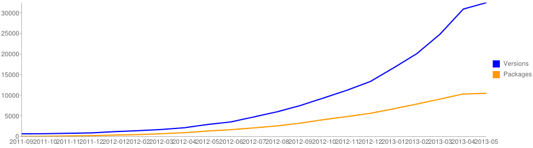

Composer
Share all the things!

Presented by Larry Garfield
@Crell
- Senior Architect, Palantir.net
- Drupal 8 Web Services Lead
- Drupal Representative, PHP-FIG
- Advisor, Drupal Association
- General busybody
Dependency management sucks
PHP sucks at sharing
- How do I get a 3rd party library?
- Where do I put the files?
- How do I load its code?
- Does it depend on anything?
- Does it go in my repo or not?
Sharing is how Open Source works
Sucking at sharing is how
Open Source dies
But my framework is extensible!
- Not all code is for your project
- Duplicate work elsewhere
- Code is not reusable
3rd party code
Bridging code to your framework
- Manually download into your framework and pray
- Manually download into some magic directory and pray
- Manually setup include calls
(... and pray)
"Do it manually and pray" is for losers
We're better than that, right?
A little history
PEAR

- PHP Extension and Application Repository
- Founded 2000 on the "new" PHP 4
- Required root to use properly (WTF?)
- Complex process for adding packages
- Easy to get wrong
Symfony 2.0
- Initial alpha, Symfony Live Paris, February 2010
- PHPBB: We're rebuilding on it!
- Symfony2 uses 3rd party libs (Doctrine, Monolog)
Dependency Hell

We need a dependency system!
It's dumb to make it Symfony specific
—Jordi Boggiano
April 2011
Nils Aderman (PHPBB): libzypp -> PHP
Jordi Boggiano (Monolog): Packagist, less sucky front-end for PEAR
With their powers combined...
Composer is a tool for dependency management in PHP. It allows you to declare the dependent libraries your project needs and it will install them in your project for you.
Uhh, what?
- No more Copy/Paste of libraries
- Resolves dependencies
- Each project defines its own requirements
- Performs build tasks
September 2011
I'd say until early 2012 it was pretty unusable, yet people used it. I guess that's how badly it was needed.
— Jordi Boggiano
Package count
April 2013: 10,000 packages
(Not just Symfony!)
Libraries
Some of the libraries available via Composer include...
 Symfony
Symfony
PHP framework for web applications
Zend Framework

PHP framework for web applications
 PHPUnit
PHPUnit
Unit testing software framework for PHP

Guzzle
HTTP client & framework for building RESTful web service clients
Solarium
Solr client library for PHP
Elastica
Elasticsearch search engine/database for PHP
Monolog
Log to files, sockets, inboxes, databases and various web services
Assetic
JavaScript, stylesheet, and image asset management
And 10,000 others
Let's Do This
Get Composer
- Quick 'n easy
- $ curl -sS https://getcomposer.org/installer | php
- Global
- $ curl -sS https://getcomposer.org/installer | php -- --install-dir=bin
Run Composer
$ composer.phar --version
Composer version d498e7
Setup
-rw-rw-r-- composer.json (your composer file)
drwxrwxr-x src/ (your code)
drwxrwxr-x www/ (your code)
-rw-rw-r-- index.php (your front controller)
composer.json
Base manifest file for your project
{
"name": "crell/myapp",
"description": "This app is amazing.",
"require": {
"guzzle/guzzle": "3.4.*"
},
"autoload": {
"psr-0": {
"MyName\\MyPackage": "src/"
}
}
}composer install
Installs all dependencies for your project
$ composer.phar install
Loading composer repositories with package information
Installing dependencies (including require-dev)
- Installing symfony/event-dispatcher (v2.3.1)
Downloading: 100%
- Installing guzzle/guzzle (v3.4.3)
Downloading: 100%
symfony/event-dispatcher suggests installing symfony/dependency-injection ()
symfony/event-dispatcher suggests installing symfony/http-kernel ()
Writing lock file
Generating autoload files
And now
-rw-rw-r-- composer.json (your composer file)
-rw-rw-r-- composer.lock (generated)
drwxrwxr-x src/ (your code)
-rw-rw-r-- index.php (your front controller)
drwxrwxr-x vendor/ (everyone else's code)
Only put these in Git
-rw-rw-r-- composer.json (your composer file)
-rw-rw-r-- composer.lock (generated)
drwxrwxr-x src/ (your code)
-rw-rw-r-- index.php (your front controller)
drwxrwxr-x vendor/ (everyone else's code)
index.php
require_once __DIR__ . '/vendor/autoload.php';
// Every class is now yours to command!
// Autoload on demand! Your work: zero.
$client = new Guzzle\Http\Client('https://api.github.com');
$request = $client->get('/user')->setAuth('user', 'pass');
$response = $request->send();
echo $response->getBody();
composer.lock
Your exact dependency commits.
composer update
Updates all dependencies to the latest version
$ php composer.phar update
Loading composer repositories with package information
Updating dependencies
What to use?
install
composer.lock?
=> Use it
No?
=> Use composer.install
update
Use composer.install
Generate a new composer.lock
Versioning
{
"require": {
"guzzle/guzzle": "3.4.*",
"nocarrier/hal": ">=0.9, <=1.0",
"pimple/pimple": "~1.0",
"monolog/monolog": "dev-master#2eb0c097",
"easyrdf/easyrdf": "0.8.*@3ebb7d",
"php": ">=5.3.10",
"ext-pdo": "*"
}
}More Schema Options
{
"license": "MIT",
"require-dev": {
"phpunit/phpunit": "3.7.*@dev"
},
"suggest": {
"monolog/monolog": "Advanced logging package"
},
"config": {
"vendor-dir": "core/vendor",
"preferred-install": "dist"
},
"minimum-stability": "stable"
}Autoloading
{
"autoload": {
"psr-0": {
"Drupal\\Core\\": "core/lib/",
},
"classmap": ["src/", "legacy/", "Pimple.php"],
"files": ["src/utility_functions.php"]
}
}Production
$ composer.phar install --no-dev --prefer-dist --optimize-autoloader
Your turn
ApiProblem
- Simple utility library
- IETF draft spec
- GitHub
ApiProblem
-rw-rw-r-- composer.json
-rw-rw-r-- LICENSE
-rw-rw-r-- phpunit.xml.dist
-rw-rw-r-- README.md
drwxrwxr-x src
drwxrwxr-x tests
composer.json
{
"name": "crell/api-problem",
"description": "PHP wrapper for the api-problem IETF specification",
"license": "MIT",
"keywords": ["api-problem", "rest", "http", "json", "xml"],
"homepage": "https://github.com/Crell/ApiProblem",
"authors": [{
"name": "Larry Garfield",
"email": "larry@garfieldtech.com",
"homepage": "http://www.garfieldtech.com/"
}],
"autoload": {
"psr-0": {"Crell\\ApiProblem": "src/"}
},
"require": {
"php": ">=5.3.3"
},
"require-dev": {
"phpunit/phpunit": "3.7.*"
}
}On GitHub
Packagist.org
GitHub-Packagist
GitHub-Packagist
In your code
{
"require": {
"crell/api-problem": "1.0-beta1"
}
}Private Repositories
Satis allows you to host your own Composer repositories
{
"repositories": [
{
"type": "composer",
"url": "http://packages.example.org/"
}
],
"require": {
"company/package": "1.2.0",
"company/package2": "1.5.2",
"company/package3": "dev-master"
}
}"Do it manually and pray" is for losers
With Composer, you can do better than that.
Stalk me!
Review this session
https://joind.in/talk/view/8690